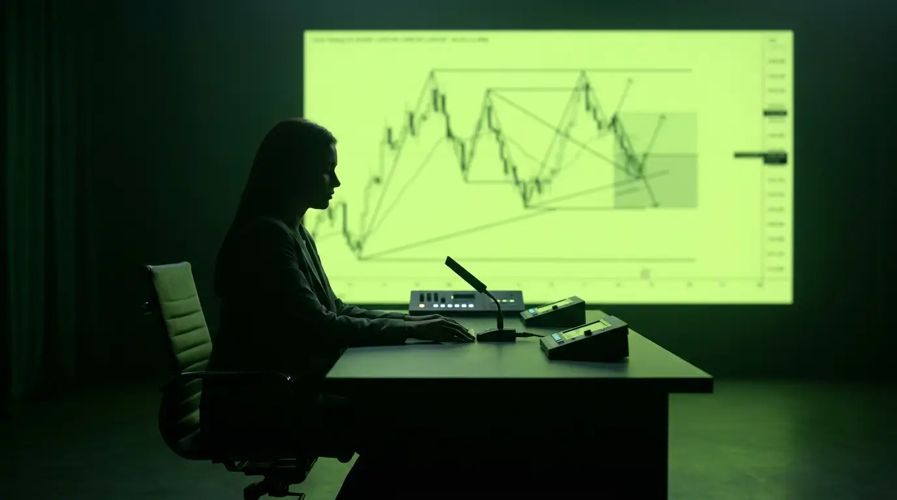

Structured courses, live sessions and an AI tutor. One calm, disciplined platform for the long game.
Educational platform only. Forex trading involves substantial risk and is not suitable for every investor.
FX Academy brings learning, practice, journaling, and feedback into one structured system, so progress is visible and discipline compounds.
Stop stitching tools together. As you scroll, see how each pillar lives inside the same calm workspace.
Clean charts, session maps and watchlists. Everything you practice on lives beside the lessons that teach it.
Scoped to your current lesson. It quizzes, explains and points you to the next step. It never promises profits.
Five tiers from first principles to institutional concepts, each lesson building on the last.
Weekly technical, fundamental and psychology sessions, recorded, transcribed and searchable.

Every trade logged, every pattern surfaced. Your equity curve, discipline and edges, all visible.
Live technical, fundamental, and mindset sessions every week, hosted by experienced educators. Every session is recorded and saved to your replay library with transcripts and AI summaries.
Market structure, liquidity and session-based setups.
Macro drivers, central banks and news interpretation.
Discipline, bias and process over outcome.
Member experiences. FX Academy does not imply or guarantee trading profits.
Join a platform built on structure, risk-awareness and honest feedback.